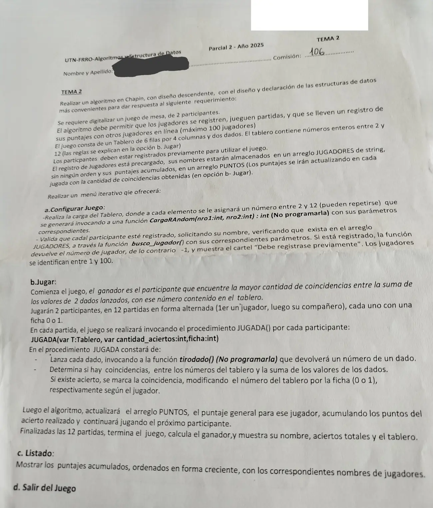

2° parcial, 19/08/2025 (Juego de mesa)
2° parcial, 19/08/2025
Enunciado


Propuesta de respuesta
Respuesta no verificada. La propuso Luta Studios con inteligencia artificial y ningún docente la revisó. Puede tener errores.
La hoja pide el diagrama de Chapin. Va un diagrama por módulo, con su declaración de variables arriba, y primero el del programa principal. Si un diagrama no entra en la pantalla, tocalo para verlo completo. Después de los diagramas está el mismo algoritmo en Python, para que lo puedas probar.
Estructuras de datos
| Estructura | Qué guarda | Índices |
|---|---|---|
JUGADORES | Nombres (precargados, sin orden) | 0 a 99, el jugador N está en N - 1 |
PUNTOS | Puntaje acumulado, paralelo a JUGADORES | 0 a 99 |
T | Tablero con números de 2 a 12 | Fila 0 a 5, columna 0 a 3 |
jug | Número de jugador de cada ficha | 0 y 1, la ficha |
aciertos | Aciertos de cada ficha en el juego | 0 y 1, la ficha |
Menú iterativo
a. Configurar juego
b. Jugar
c. Listado creciente con arrastre
El mismo algoritmo en Python
Es el programa que se probó, con las mismas sentencias y en el mismo orden que las cajas. Cada Leer del diagrama es un input, convertido a int o float según la declaración, y cada Mostrar es un print.
# Estructuras
# JUGADORES: arreglo [0..99] de str (precargado, sin orden; el jugador N está en N-1)
# PUNTOS: arreglo [0..99] de int (precargado, paralelo a JUGADORES)
# T: matriz [0..5][0..3] de int (el tablero)
# jug: arreglo [0..1] de int (número de jugador de cada ficha)
# aciertos: arreglo [0..1] de int (aciertos de cada ficha en el juego)
JUGADORES = [""]*100
PUNTOS = [0]*100
T = [[0]*4 for n in range(6)]
jug = [0]*2
aciertos = [0]*2
def busco_jugador(nom):
# nom: str
# i: int
i = 0
while i < 99 and JUGADORES[i] != nom:
i = i + 1
if JUGADORES[i] == nom:
return i + 1
else:
return -1
def CONFIGURAR():
# f, c, ficha: int
# nom: str
for f in range(6):
for c in range(4):
T[f][c] = CargaRAndom(2, 12)
for ficha in range(2):
nom = input("Nombre del participante con ficha " + str(ficha) + ": ")
jug[ficha] = busco_jugador(nom)
while jug[ficha] == -1:
print("Debe registrarse previamente")
nom = input("Nombre del participante con ficha " + str(ficha) + ": ")
jug[ficha] = busco_jugador(nom)
def JUGADA(T, cantidad_aciertos, ficha):
# T: matriz [0..5][0..3] de int (se modifica adentro)
# cantidad_aciertos, ficha, suma, f, c: int
suma = tirodado() + tirodado()
for f in range(6):
for c in range(4):
if T[f][c] == suma:
T[f][c] = ficha
cantidad_aciertos = cantidad_aciertos + 1
return cantidad_aciertos
def MOSTRAR_TABLERO():
# f: int
for f in range(6):
print(T[f][0], T[f][1], T[f][2], T[f][3])
def JUGAR():
# partida, ficha, antes, g: int
aciertos[0] = 0
aciertos[1] = 0
for partida in range(12):
for ficha in range(2):
antes = aciertos[ficha]
aciertos[ficha] = JUGADA(T, aciertos[ficha], ficha)
PUNTOS[jug[ficha] - 1] = PUNTOS[jug[ficha] - 1] + aciertos[ficha] - antes
if aciertos[0] == aciertos[1]:
print("Empate con", aciertos[0], "aciertos")
else:
if aciertos[0] > aciertos[1]:
g = 0
else:
g = 1
print("Ganador:", JUGADORES[jug[g] - 1], "con", aciertos[g], "aciertos")
MOSTRAR_TABLERO()
def LISTADO():
# nomAux: arreglo [0..99] de str
# ptsAux: arreglo [0..99] de int
# i, k, auxP: int
# auxN: str
nomAux = [""]*100
ptsAux = [0]*100
for i in range(100):
nomAux[i] = JUGADORES[i]
ptsAux[i] = PUNTOS[i]
for i in range(99):
for k in range(i + 1, 100):
if ptsAux[i] > ptsAux[k]:
auxP = ptsAux[i]
ptsAux[i] = ptsAux[k]
ptsAux[k] = auxP
auxN = nomAux[i]
nomAux[i] = nomAux[k]
nomAux[k] = auxN
for i in range(100):
if nomAux[i] != "":
print(nomAux[i], ptsAux[i])
# Programa principal
# opcion: str
# configurado: bool
configurado = False
opcion = ""
while opcion != "d":
print("a. Configurar juego")
print("b. Jugar")
print("c. Listado")
print("d. Salir del juego")
opcion = input("Opción: ")
while opcion != "a" and opcion != "b" and opcion != "c" and opcion != "d":
opcion = input("Opción inválida: ")
match opcion:
case "a":
CONFIGURAR()
configurado = True
case "b":
if configurado:
JUGAR()
configurado = False
else:
print("Primero configure el juego")
case "c":
LISTADO()Respuesta no verificada. Puede tener errores.
Se armó con la hoja del examen y la página del 2° parcial (parámetros, arreglos, búsquedas, ordenamiento con arrastre y funciones que solo se invocan). Los arreglos se declaran como en las preguntas frecuentes de los TP 2024. El Chapin sigue la forma de las diapositivas del examen de Historia Clínica de 2019. El encabezado de JUGADA es el de la hoja.
Quedó en duda: En Python un entero no se pasa por referencia. Por eso JUGADA devuelve la cantidad de aciertos actualizada en lugar del var cantidad_aciertos del encabezado. La matriz sí vuelve cambiada, porque la función la modifica adentro. Una casilla marcada con la ficha (0 o 1) ya no puede coincidir con una suma de dados, que va de 2 a 12. Así un número no se cuenta dos veces. En cada jugada se suman a PUNTOS los aciertos nuevos de esa jugada. La hoja no dice cuántos puntos vale un acierto, así que vale uno. La hoja no dice qué pasa con un empate ni si se puede jugar sin configurar. Acá se avisa del empate y la opción b pide configurar antes. busco_jugador devuelve el número de jugador (la posición más 1), porque los jugadores van de 1 a 100. El listado muestra solo los lugares con nombre, porque no todos los 100 están ocupados. Las diapositivas de la materia no muestran en Chapin la lectura de datos ni la selección múltiple. Acá van como Leer y como Según, con una columna por caso.
¿Cómo te fue?
Marcá cada tema del examen.
- MatricesArreglos bidimensionales (matrices), en 2° parcial
- ProcedimientosDónde va un procedimiento en un programa Pascal, en 2° parcial
- ParámetrosSubprogramas y parámetros, en 2° parcial